Spezialschläge
Lade deine Power im Ballwechsel auf und zünde den Kometen-Topspin. Mit jedem Kapitel kommen neue Schläge dazu. Die Gegner haben auch welche.
- Kometen-Topspin
- Eis-Schupf
- Die Mauer
- Donnerschuss
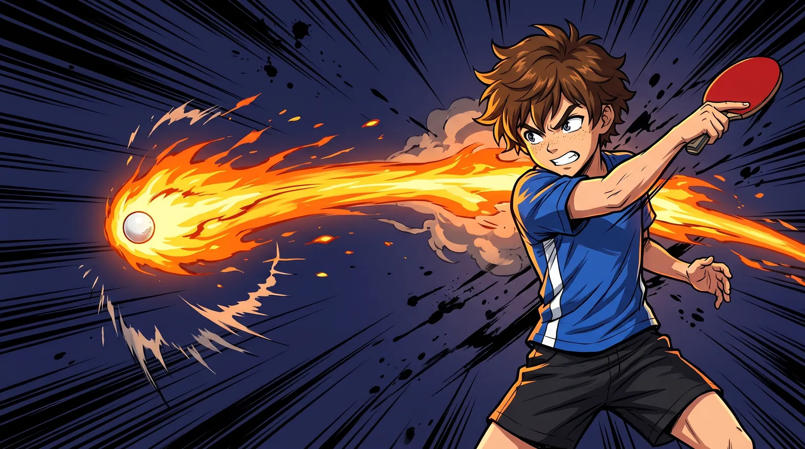
Das Tischtennis-Anime-RPG.
Ab 15.12. auf iPhone & Android
Dave ist zehn und spielt im Keller gegen Papa. Dann kommen der Verein, die Liga und die ersten Rivalen. Und Schläge, die es sonst nur im Anime gibt.
Kapitel 1 gratis. Kapitel 1 bis 4 einmal 4,99 €. Keine Werbung. PC folgt 2027.
Vom Kellerkind zum Vereinsmeister. Und dann geht's erst richtig los.
Ein Story-RPG über deutsches Vereinsleben: Turnhallengeruch, Bratwurst am Spieltag, Rentner mit langen Noppen und ehrgeizige Eltern. Dave läuft durch Dorf, Park und Halle, nimmt Herausforderungen an, trainiert mit Trainer Kowalski und spielt Matches mit echtem Tischtennis-Timing.
Es geht ums Verlieren, um Freundschaft und um einen großen Traum. Jedes Kapitel erzählt der erwachsene Dave als Erinnerung, kurz vor dem wichtigsten Spiel seines Lebens.

Papa, die alte Platte und Mats, der Mobber.

Erste Mannschaft, Auswärtsfahrten, Rivale Jonas.
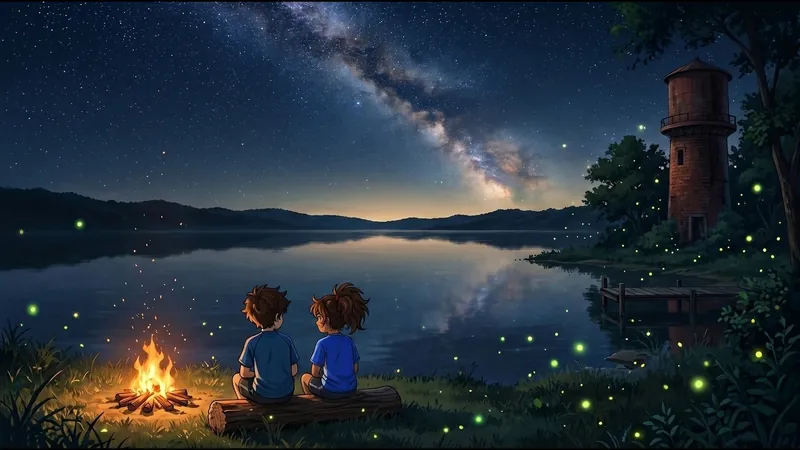
Badesee, Sommercamp und eine neue Gegnerin.
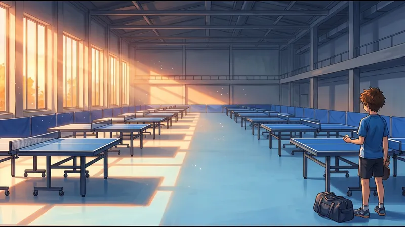
Herbst im Stützpunkt. Jetzt schaut jemand zu.
Weitere Kapitel folgen, bis hoch in die WM-Halle.
Wer zu früh oder zu spät schlägt, merkt das sofort. Wie im Training auch.
Lade deine Power im Ballwechsel auf und zünde den Kometen-Topspin. Mit jedem Kapitel kommen neue Schläge dazu. Die Gegner haben auch welche.

Topspin, Schupf, Block und Flip wie am echten Tisch. Spin lesen, Beine bewegen, im richtigen Moment treffen: „Perfekt!“ gibt es nur für sauberes Timing.
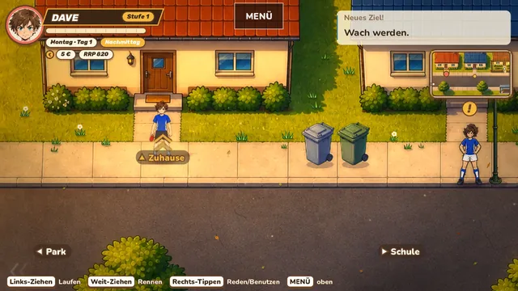
Lauf durch Dorfstraße, Park, Schule, Vereinsheim und später bis zum Badesee und in die Kreisstadt. Überall Leute zum Quatschen, Aufträge, Herausforderungen und Training mit Kowalski.

Spieltage im Kalender, Auswärtsfahrten im Vereinsbus, Doppel mit Teamkollegen und Ranglistenpunkte wie im echten Verein. Dazwischen: Dorf, Park, Schule und Vereinsheim erkunden.
Der Gameplay-Trailer und darunter die Intros von Kapitel 1 bis 4, jedes mit eigenem Song. Achtung, mit Ton.

Gameplay-Trailer
Alle Figuren und Vereine sind erfunden. Wer mal im Verein gespielt hat, kennt trotzdem jeden davon.
 DaveHeld
DaveHeldOptimist mit großer Klappe. Ihm ist das Spiel wichtiger als der Sieg, und er will immer gleich draufhauen.
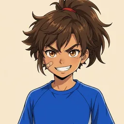
KarinaBeste FreundinWohnt nebenan, spielt eigentlich Fußball. Frech, ehrlich und der Kompass der Story.
 PapaFamilie
PapaFamilieHat die alte Platte im Keller und lässt Dave gern gewinnen, bis der es merkt. Bastelt peinliche Fan-Schilder.
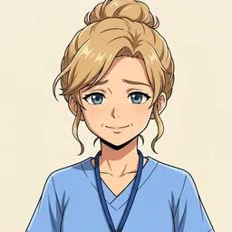
MamaFamilieKrankenschwester im Schichtdienst und pragmatisch: „Hausaufgaben, dann Kreisliga.“
 KowalskiTrainer
KowalskiTrainerBrummiger Ex-Profi mit einem Geheimnis. „Beine, Junge. Tischtennis spielt man mit den Beinen.“
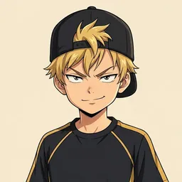
MatsMobber (erstmal)Dreimal Jugend-Vereinsmeister, Sohn des Sponsors. Nennt Dave nur „Kellerkind“.
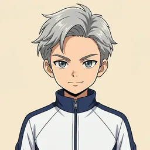
JonasRivaleTalent aus dem Stadtverein, der Vater macht Druck. Wirkt arrogant, steht aber selbst unter Strom.
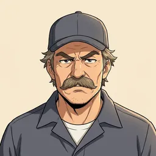
RalfHausmeisterSchließt um 22 Uhr die Halle ab. Egal, was gerade passiert.


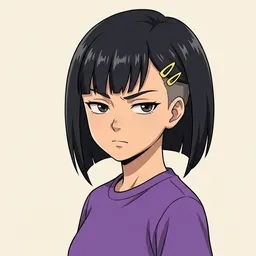


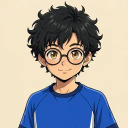
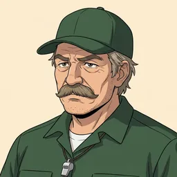

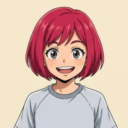


Echte Spielszenen vom Handy. Türkise Schilder: Anime-Szenen aus der Story.
Devlog, Clips zuerst, Umfragen zu neuen Spezialschlägen und direkter Draht zu mir.
Discord beitreten baldAuf iPhone/iPad und Android ab 15.12.2026. Im App Store kannst du schon vorbestellen, Google Play folgt in Kürze. Die PC-Version für Steam kommt 2027.
Laden ist kostenlos, Kapitel 1 auch. Kapitel 1 bis 4 gibt es als Einmalkauf für 4,99 €. Keine Werbung, kein Abo.
Nein. Es gibt Schwierigkeitsstufen und ein Tutorial im Keller mit Papa. Wer selbst im Verein spielt, erkennt aber jeden Schlag wieder. Und die Noppen-Rentner sowieso.
Deutsch und Englisch. Auf dem Handy spielst du mit Touch, ein Controller geht auch.
Die Story ist warmherzig und lustig, ohne Gewalt. Mobbing ist ein Thema: Dave wird als Anfänger geärgert und wehrt sich. Im App Store ist es ab 12 Jahren freigegeben.
Ich, David, allein. Ich spiele selbst im Verein. Story, Dialoge, Spieldesign und Code sind von mir. Grafik und Musik entstehen mit KI-Werkzeugen, ich wähle aus, bessere nach und baue alles ins Spiel ein.
Fakten, Logo, Screenshots und ein ZIP zum Herunterladen gibt es im Pressebereich. Schreib mir gern für einen Code zur Vollversion.